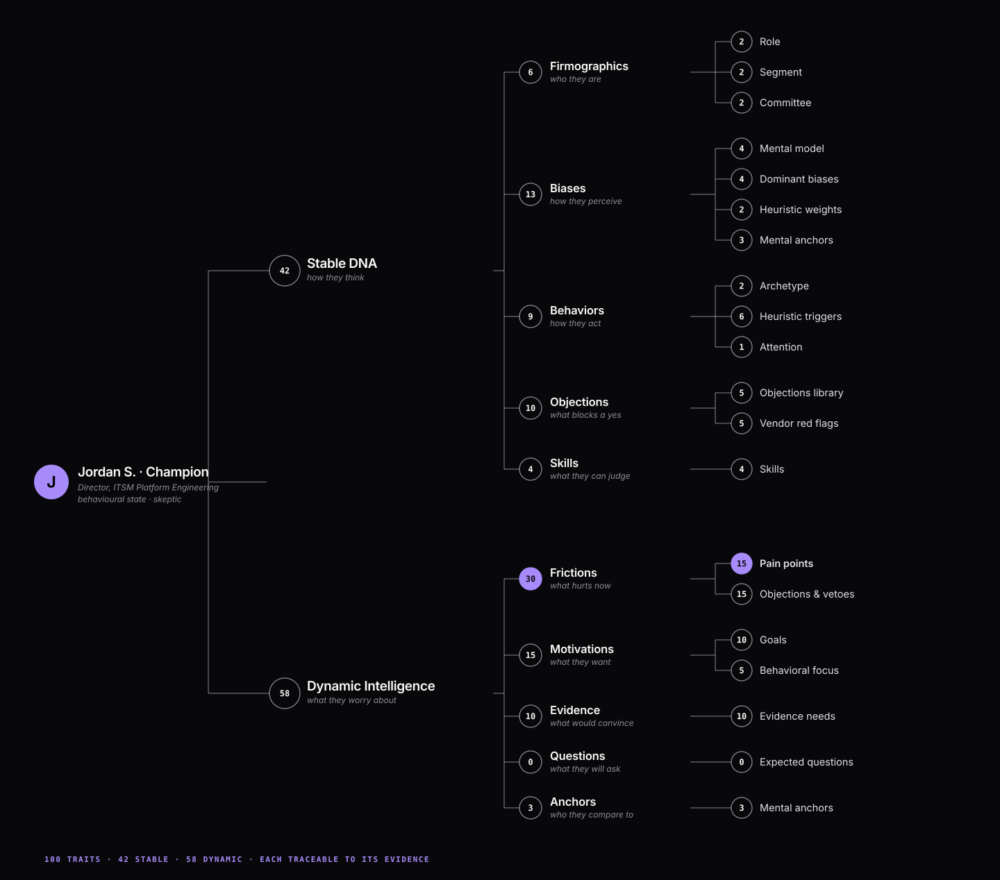

The best AI buyer persona
tools for B2B.
Some AI persona tools write a persona from what you type. Others build buyers from real evidence and test your launch on them. Here is what each one is built from, what it can test, what it costs, and how they rank for B2B teams.
Templates, AI personas and simulations.
Buyers built from evidence, tested on your launch.
Against each vendor’s own pages.
Buyers built from evidence,
then tested on your launch.
Most persona tools describe a buyer. WhyUser compiles each buyer from what real buyers say, then has them read your page, ad or email as a buying committee.
- Before and after they engageReviews, community threads, competitor reviews and buyer questions, plus your calls, CRM objections and win/loss notes.
- Every trait cites its sourceYour own marketing claims never become a buyer’s belief. They become proof the buyer asks for.
- Predicts objections per roleThen checks them on your real page, ad or email, before launch.
- One buyer, or the whole committeeTest with a single persona, or with all five roles and the handoffs between them scored.
- Graded in the open473 claims graded by customers’ own teams, 84% held up.

Compiled from evidence.
One buyer, or the committee.
A persona is only as good as what it is built from. WhyUser compiles each buyer from what real buyers said, before and after they engaged, then tests your launch on one buyer or the whole committee.
- Reviews
- Community threads
- Competitor reviews
- Buyer questions
- Sales calls
- CRM objections
- Win/loss notes
- Needs SOC 2 before a trialReviews
- Asks where data is storedSales calls
- Blocks tools without SSOCommunity
Most write a persona.
One tests your launch on it.
A persona document cannot react to a page. Interview tools ask one persona at a time. WhyUser builds buyers from evidence before and after they engage, then tests your asset on one buyer or the committee.
AI buyer persona tools,
ranked for B2B.
Ranked for B2B marketing teams that want buyers they can test a launch on. Templates and sales roleplay tools rank lower because they do a different job.
-
WhyUser
Best overall for B2B: buyers built from evidence, tested on your launchEach buyer is compiled from evidence, never made up: what buyers said before they engaged, in reviews, community threads, competitor reviews and their questions, and after, on your sales calls, in CRM objections and in win/loss notes. Every trait cites its source. Then test your real page, ad or email on one buyer, or on the whole buying committee.
- Built from what buyers say before and after they engage, including the ones who never talked to you.
- Simulates one persona or the whole committee, with the handoffs between roles scored.
- Predicts objections and proof needs per role, then tests them on your launch.
- One account confirmed 6 of 8 predicted proof needs on 42 recorded sales calls, and 2 more in part.
- Built for B2B marketing launches, not product or UX research.
-
Minds
Best for AI audience research at scaleSynthetic audiences answer studies, concept and message tests. For a committee, it creates a separate persona per role and compares their answers. source
- Pay per response, from $0.12. source
- Can test website copy before you publish it. source
- Each persona answers on its own; there is no scoring of handoffs between roles.
-
Delve AI
Best for persona profiles from your CRM and analyticsGenerates personas, digital twins and synthetic users from your CRM or marketing automation records, Google Analytics, Search Console and CSV files.
- Uses your own first-party data. source
- Each persona notes its role in the buying committee. source
- Your CRM only holds people who already replied. We found no testing of a live page against the committee.
-
Synthetic Users
Best for AI user interviews in product researchAI interviews with simulated users, grounded in research you upload, such as interviews, support tickets and segment definitions.
- Interviews run in minutes. source
- Unlimited seats on annual plans.
- Simulates individual users; we found no buying-committee feature. source
-
Evelance
Best for quick persona scores on a page or adPredictive personas score a live website, app, design or ad, and suggest fixes. Audience presets include B2B software buyers and enterprise decision makers.
-
BuyerTwin
Best for ongoing buyer alignment scoresAn AI buyer research platform that gives an always-on alignment score for each buyer and for the committee, across your website and messaging.
- Scores the committee as well as each buyer. source
- Low entry price.
- Buyers come from its own research, LinkedIn data and web scraping, not your calls. source
-
Articos
Best budget option for quick synthetic studiesSynthetic user research grounded in behavioural science: 12 to 50 AI personas interview about your concept, copy or page variants.
- Under 30 minutes per study. source
- From $29 a month, with a free trial.
- Each persona answers alone, with three variants at most per test.
-
Evidenza
Best for strategy research with hard-to-reach audiencesThousands of AI personas modelled on your customer base take a survey or interview, for market and brand strategy research.
- Full-service results in 72 hours. source
- Priced by proposal, and it does not take your customer data. source
-
Ask Rally
Best for cheap virtual focus groupsVirtual focus groups: ask a panel of AI personas a question and get many answers in minutes. You can clone personas from interview transcripts or surveys.
- From $20 a month, with a free trial. source
- Clone personas from your own transcripts.
- Calibrated mainly on consumer demographics; no buying-committee feature.
-
Simile
Best for enterprise consumer simulationsEnterprise simulations of how customers or populations respond to change, built on studies of real people and behaviour data.
- Starts from real people and adds your own customer data. source
- Sales-led, with consumer examples and no published B2B role modelling. Price not published.
-
HubSpot Make My Persona
Best free persona templateA free AI tool that turns your plain-language description of a customer into a persona document you can export.
- Free, with no sign-up needed. source
- Takes minutes.
- Built from what you type, and saves up to 3 personas. It cannot react to a page, ad or email.
-
Hyperbound and Second Nature
Best for sales rep practice calls, a different jobAI buyers for sales roleplay: reps practise calls with personas built from your calls, scripts or prospect profiles, with up to four AI buyers on one call.
- Trains reps on the objections they will hear. source
- Multi-buyer calls in both tools. source
- Built to coach reps, not to test marketing pages, ads or emails.
-
ChatGPT or Claude
Best for drafting persona ideasA general AI assistant can draft a persona or role-play a buyer reading your copy.
- Fast and cheap for a first draft.
- One model plays every role, and the same prompt gives a different answer each time, so you cannot tell if a fix worked.
Every tool on one screen.
| Built from | Tests a real asset | Time | Price from | |
|---|---|---|---|---|
| WhyUser | Evidence from before and after buyers engage | Yes: pages, ads, emails | About 30 minutes per test | Page test about $89 on Scale. From $1,000 a month, billed annually. Free 5-week design partnership. |
| Minds | An audience you describe source | Partly: copy and screenshots | Minutes source | From $0.12 a response; Pro $199 a seat a month source |
| Delve AI | Your CRM, analytics and CSVs source | No | Minutes source | Free tier; $317 to $2,499 a month source |
| Synthetic Users | Your research and segment definitions source | Partly: concept tests | Minutes source | From $12,500 a year source |
| Evelance | A described audience and its persona database source | Yes: sites, apps, ads | 10 to 30 minutes source | $2.99 a persona, pay as you go source |
| BuyerTwin | Its research, LinkedIn data, web data source | Yes: website and messaging source | Always on | From $29 a month source |
| Articos | A target buyer you define source | Partly: variants you upload | Under 30 minutes source | From $29 a month source |
| Evidenza | A described audience and past research source | No: surveys and interviews | 72 hours, full service source | Custom proposal source |
| Ask Rally | Panel personas, or your transcripts source | Partly: images and copy polls | Minutes source | From $20 a month source |
| Simile | Real-people studies and behaviour data source | Partly: campaign and creative tests | Not published | Not published; demo request source |
| HubSpot Make My Persona | What you type source | No | Minutes source | Free source |
| Hyperbound and Second Nature | Your calls, scripts and prospect profiles source | No: practice calls | Live calls | Hyperbound free plan, paid by demo; Second Nature not published source |
| ChatGPT or Claude | Your prompt | Partly: role-play | Instant | A chat subscription |
Checked 7 November 2026 against each vendor’s own pages, linked on each entry. WhyUser is our own product. Something changed? Tell us at hello@whyuser.com and we will fix it.
Four questions pick the tool.
What is the persona built from?
What you typed, your CRM, or what buyers say in public, including the ones who never talked to you.
Can it test your real asset?
A persona document cannot react to a page, ad or email. A simulation can.
Does it model the committee?
One persona at a time misses the deal that dies between roles.
Can you check it?
Ask for a graded track record, or run it on a campaign whose ending you already know.
Draft, compile, test, then talk.
- DraftSketch who you think the buyer is. A free template is fine.
- CompileReplace the guesses with what buyers actually say.
- TestRun your page, ad or email past the buying committee. Fix what stalls.
- TalkConfirm the big calls with real buyers, and coach reps on what they will hear.
Answers, briefly.
What's the best AI buyer simulation tool for small marketing teams?
For a small B2B team testing launches, WhyUser: buyers are built from real evidence and read your page, ad or email as a buying committee, about $89 a page test on the Scale plan, with a free 5-week design partnership. For quick, low-cost studies, Articos and BuyerTwin start at $29 a month and Ask Rally at $20.
Which platforms build simulated buyers from my customer interviews?
WhyUser builds buyers from your sales calls, CRM objections and win/loss notes, plus public evidence such as reviews and community threads. Synthetic Users grounds interviews in research you upload, Delve AI uses your CRM and analytics, and Ask Rally can clone personas from transcripts.
Which tools actually predict buyer objections instead of generating generic personas?
Look for tools that compile buyers from what real buyers say, before and after they engage, and then test your real asset. WhyUser predicts the objections and proof needs of each role and checks them on your page. At one account, 6 of 8 predicted proof needs were confirmed on 42 recorded sales calls, and 2 more in part.
How do dedicated buyer simulation tools compare with general AI chatbots?
A chatbot is one model playing every role, and it gives a different answer each time, so you cannot tell whether a fix worked. Dedicated tools keep the buyers fixed. WhyUser also builds them from real evidence and scores the handoffs between roles, which one chatbot conversation cannot do.
What buyer simulation software is actually worth paying for?
Pay for what you will act on. If you only need a persona document, HubSpot Make My Persona is free. If you need to know which role your launch loses before you spend on it, WhyUser, which also publishes a graded track record: 473 claims graded by customers, 84% held up.
Which AI buyer simulation services have the best reviews?
On G2, checked 7 November 2026: Second Nature 4.7 from 437 reviews, Hyperbound 4.9 from 40, Delve AI 4.8 from 22 and Articos 4.8 from about 30. Minds, BuyerTwin, Evidenza and WhyUser have no G2 reviews yet. WhyUser publishes a graded track record instead.
Who offers realistic AI buyers for testing business software messaging?
Realism comes from what the buyers are built from. WhyUser compiles each buyer from reviews, community threads, buyer questions and your own calls, and every trait cites its source. Many persona tools build the buyer from a description you type.
Can I simulate one persona, or only a whole committee?
Both. WhyUser tests a page, ad or email on one persona, such as the economic buyer, or on a five-role buying committee, and scores the handoffs between roles when you run the committee.
What is the difference between pre-engagement and post-engagement buyer data?
Pre-engagement data is what buyers say before they talk to you: reviews, community threads, competitor reviews and the questions they ask in public. Post-engagement data is what they say after: your sales calls, CRM objections and win/loss notes. WhyUser compiles personas from both, so they reflect buyers who never replied as well as those who did.
Where can I test landing pages with simulated potential customers?
WhyUser runs your page past a simulated buying committee of 50 buyers in about 30 minutes. Evelance scores pages with predictive personas, and Articos tests page variants with AI personas. See the best landing page testing tools for the full list.
Fail in the test.
Win in the market.
Stop writing personas from a brainstorm. Let your buyers’ own words read your next launch.